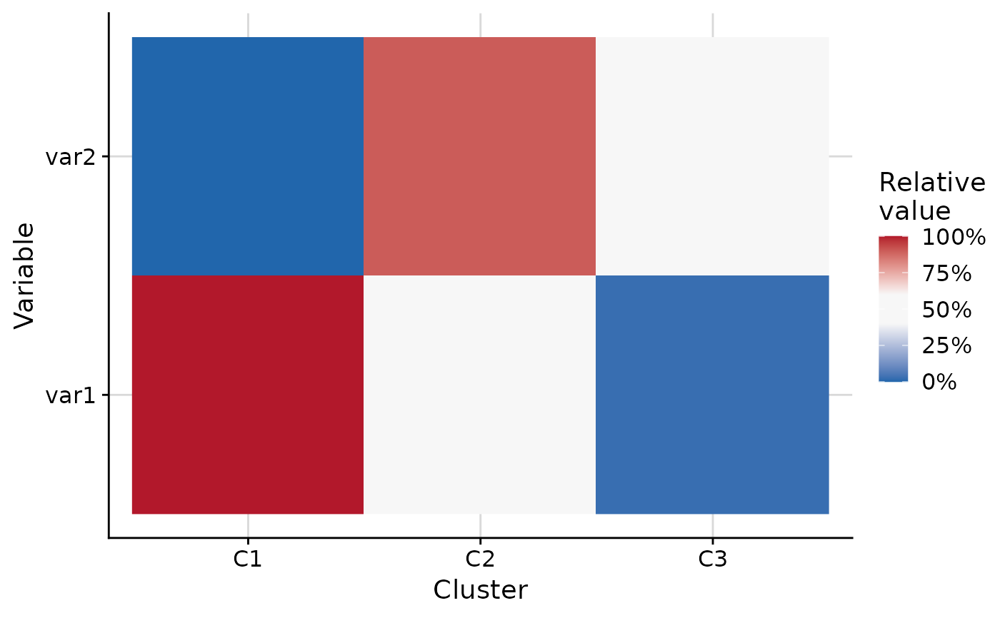

Plot heat map of scaled variable values per cluster
Source:R/plot_cluster_heatmap.R
plot_cluster_heatmap.RdCreates a heat map where each tile shows a scaled summary of a variable for
a cluster. The scaling method is controlled by the scale_method parameter.
By default (scale_method = "ecdf"), each tile shows the percentile of the
cluster's median value compared against the empirical cumulative distribution
function (ECDF) of that variable across all observations not belonging to the
cluster. Clusters and variables are ordered along the axes via hierarchical
clustering.
Usage
plot_cluster_heatmap(
data,
cluster,
vars = NULL,
scale_method = "ecdf",
col = c("#2166AC", "#F7F7F7", "#B2182B"),
col_positions = "auto",
white_range = c(0.4, 0.6),
font_size = 14,
thm = cowplot::theme_cowplot(font_size = font_size) + ggplot2::theme(plot.background =
ggplot2::element_rect(fill = "white", colour = NA), panel.background =
ggplot2::element_rect(fill = "white", colour = NA)),
grid = cowplot::background_grid(major = "xy"),
show_values = FALSE,
values_format = NULL,
values_col = "black",
values_size = 3
)Arguments
- data
data.frame. Rows are observations. Must contain a column identifying cluster membership and columns for variable values.
- cluster
character. Name of the column in
datathat identifies cluster membership.- vars
character vector or
NULL. Names of columns indatato use as variables. IfNULL, all columns exceptclusterare used. Default isNULL.- scale_method
character. Method used to scale variable values for colouring cells. One of
"ecdf"(default),"zscore","raw","minmax", or"minmax_var"."ecdf": Each cell shows the percentile of the cluster's median value compared to all observations outside the cluster (empirical CDF). Fill values are in [0, 1] and the legend uses percent labels."zscore": Each cell shows the z-score of the cluster's median relative to all observations of that variable ((median - mean) / sd). Fill values are unbounded."raw": Each cell shows the raw median value. Fill values are unbounded."minmax": Each cell shows the cluster median scaled to [0, 1] using the global minimum and maximum across all observations of all variables. Fill values are in [0, 1] and the legend uses percent labels."minmax_var": Each cell shows the cluster median scaled to [0, 1] using the minimum and maximum of all observations within each variable separately. Fill values are in [0, 1] and the legend uses percent labels.
- col
character vector. Colours used to fill tiles, ordered from low to high values. Default is
c("#2166AC", "#F7F7F7", "#B2182B")(blue, white, red). Any number of colours (>= 2) is accepted.- col_positions
numeric vector or
"auto". Positions (in [0, 1]) at which each colour incolis placed on the fill scale. Must be the same length ascol, sorted in ascending order, with the first value0and the last value1. When"auto"(default) andcolhas exactly three colours andscale_method = "ecdf", the middle colour is stretched overwhite_range(the current default behaviour). In all other"auto"cases the colours are evenly spaced from 0 to 1.- white_range
numeric vector of length 2. The range of positions (on a 0-1 scale) over which the middle colour is stretched. Only used when
colhas exactly three colours,scale_method = "ecdf", andcol_positions = "auto". Default isc(0.4, 0.6).- font_size
numeric. Font size passed to
cowplot::theme_cowplot. Default is14.- thm
ggplot2 theme object or
NULL. Default iscowplot::theme_cowplot(font_size = font_size)with a white plot background. Set toNULLto apply no theme adjustment.- grid
ggplot2 panel grid or
NULL. Default iscowplot::background_grid(major = "xy"). Set toNULLfor no grid.- show_values
logical. Whether to overlay the median value for each cluster-variable combination as a text label on each tile. Default is
FALSE.- values_format
function or
NULL. A function that takes a numeric vector and returns a character vector of formatted labels. Applied to the per-cluster median values whenshow_values = TRUE. WhenNULL, values are formatted to three significant figures usingformatC(x, digits = 3, format = "g"). Default isNULL.- values_col
character. Colour for the overlaid text labels. Default is
"black".- values_size
numeric. Font size (in
ggplot2units) for the overlaid text labels. Default is3.
Examples
set.seed(1)
data <- data.frame(
cluster = rep(paste0("C", 1:3), each = 20),
var1 = c(rnorm(20, 2), rnorm(20, 0), rnorm(20, -2)),
var2 = c(rnorm(20, -1), rnorm(20, 1), rnorm(20, 0))
)
plot_cluster_heatmap(data, cluster = "cluster")

plot_cluster_heatmap(data, cluster = "cluster", show_values = TRUE)